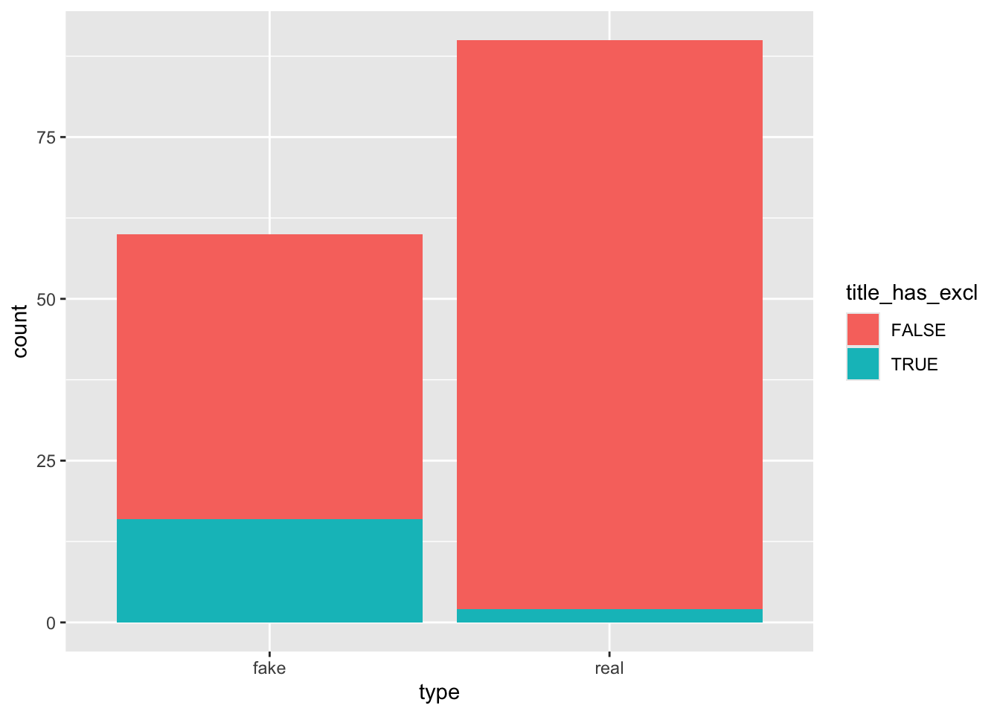
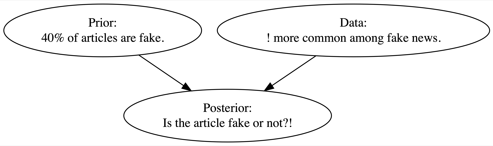
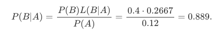

library(bayesrules)
library(tidyverse)
library(janitor)
library(skimr)Week 3, Lecture 1, Chapter 2
Import data with bayesrules package
data(fake_news)Bring up dataset documentation
?fake_newsYour Turn
💻 📈 Take 10 minutes to do some some exploratory data analysis below and we will chat about best practices. Keep in mind two variables that we will focus on, type and title_has_exc
unique(fake_news$type)[1] fake real
Levels: fake realunique(fake_news$title_has_excl)[1] FALSE TRUEfake_news %>%
group_by(title_has_excl, type) %>%
count()# A tibble: 4 × 3
# Groups: title_has_excl, type [4]
title_has_excl type n
<lgl> <fct> <int>
1 FALSE fake 44
2 FALSE real 88
3 TRUE fake 16
4 TRUE real 2ggplot(data = fake_news, aes(x = type, fill = title_has_excl)) +
geom_bar()
The Whole Game

A <- Has exclamation point
- Ac <- Does not have exclamation point
B <- Article is fake
- Bc <- Article is real

Our fake news analysis boils down to the study of two variables: an article’s fake vs real status and its use of exclamation points. These features can vary from article to article. Some are fake, some aren’t. Some use exclamation points, some don’t. We can represent the randomness in these variables using probability models. In this section we will build a prior probability model for our prior understanding of whether the most recent article is fake; a model for interpreting the exclamation point data; and, eventually, a posterior probability model which summarizes the posterior plausibility that the article is fake.
Prior Probability Model
Percent of articles fake vs real
P(B)
fake_news %>%
tabyl(type) %>%
adorn_totals("row") type n percent
fake 60 0.4
real 90 0.6
Total 150 1.0P(B) = 0.40
- The prior probability (an unconditional probability) that the article is fake is 0.4
prior_probability_article_fake <- 0.4P(Bc) = 0.60
- The prior probability (an unconditional probability) that the article is real is 0.6
P(A)
fake_news %>%
tabyl(title_has_excl) %>%
adorn_totals("row") title_has_excl n percent
FALSE 132 0.88
TRUE 18 0.12
Total 150 1.00P(A) = 0.12
- The prior probability (an unconditional probability) that the article has an exclamation point is 0.12
prior_probability_has_exc <- 0.12P(Ac) = 0.88
- The prior probability (an unconditional probability) that the article does not have an exclamation point is 0.88
So far we have this
\[ P(B \mid A) = \frac{0.4 L(B \mid A)}{0.12} = \frac{0.4 \cdot 0.2667}{0.12} = 0.889. \]
Likelihood
The likelihood L(B∣A) is defined as P(A∣B):
If the article were fake, how likely is it to have an exclamation point?
The probability the article uses an exclamation point given that it is fake
- What percentage of fake articles use an exclamation point?
fake_news %>%
tabyl(title_has_excl, type) %>%
adorn_percentages("col") title_has_excl fake real
FALSE 0.7333333 0.97777778
TRUE 0.2666667 0.02222222L(B|A) = 0.267
likelihood_article_fake_has_exc <- 0.27L(Bc|A) = 0.022
Now we have enough info for the posterior probability model
\[ P(B \mid A) = \frac{0.4 \cdot 0.2667 }{0.12} = \frac{0.4 \cdot 0.2667}{0.12} = 0.889. \]
(prior_probability_article_fake * likelihood_article_fake_has_exc) / prior_probability_has_exc[1] 0.9We started with a prior understanding that there’s only a 40% chance that the incoming article would be fake. Yet upon observing the use of an exclamation point in the title “The president has a funny secret!”, a feature that’s more common to fake news, our posterior understanding evolved quite a bit – the chance that the article is fake jumped to 88.9%.
Another way to think about it:
P(B|A)
fake_news %>%
tabyl(title_has_excl, type) %>%
adorn_percentages("row") title_has_excl fake real
FALSE 0.3333333 0.6666667
TRUE 0.8888889 0.1111111Challenge
Come up with your own P(B|A) and share with the class
Let’s choose one, generate synthetic data, and model
Video
Challenge
Let’s put Bayes’ Rule into action in another example. Our word choices can reflect where we live. For example, suppose you’re watching an interview of somebody that lives in the United States. Without knowing anything about this person, U.S. Census figures provide prior information about the region in which they might live: the Midwest (M), Northeast (N), South (S), or West (W).
data(pop_vs_soda)Exploratory Analysis
1) Build a prior probability model (an unconditional probability model) with probabilities for where the person is from
Letting S denote the person is from the south
- P(S)
Letting N denote the person is from the northeast
- P(N)
Letting W denote the person is from the west
- P(W)
Letting M denote the person is from the midwest
- P(M)
2) But then, you see the person point to a fizzy cola drink and say “please pass my pop.” Though the country is united in its love of fizzy drinks, it’s divided in what they’re called, with common regional terms including “pop,” “soda,” and “coke.” This data, i.e., the person’s use of “pop,” provides further information about where they might live.
-Determine regional likelihoods that a person uses the word “pop,”
- Letting A denote the event that a person uses the word “pop,”
3) Build a posterior probability model determining the probability that the person is from the south based on using the word “pop”: P(S|A)
Pop vs Soda - In Class
Exploratory Analysis
Prior Probability
2) Regional Likelihoods
3) Marginal prior probability that a person uses the word pop
4) Finding our posterior probability P(S|A)